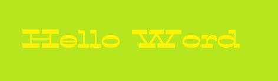

Responsivt web design, flexbox og grid
Din hjemmeside skal kunne tilpasse sig på skærme af forskellige størrelse, heraf telefoner, computere
og fjernsyn, så hjemmesiden kan anvendes uanset hvilken enhed brugeren har.
For at din hjemmeside skal tilpasse sig alle enheder, kan du bruge RWD.
Dette giver et flexibelt layout, som hurtigt tilpasser sig skærmstørrelsen.
Alle hjemmesider anvender Meta Viewport, et tag som får hjemmesidens størrelse til at ændre sig alt
efter enheden. Det indsættes i din HTML-fil i Head og er ikke en synlig del af hjemmesiden for brugeren.
Hjemmesiden vil også være responsiv over for media.
<head>
<meta charset="UTF-8">
<meta http-equiv="X-UA-Compatible" content="IE=edge">
<meta name="viewport" content="width=device-width;intial-scale=1.0">
<title></title>
<head>
Media kan hjælpe med at ændre hjemmesiden, når skærmstørrelsen ændres. Hvis skriftstørrelsen er tilpas på en computer,
men for stor på en mobil, vil tekstørrelsen kunne tilpasse sig med media, det same gælder for billeder og bokse.
For at kunne bruge media, skal du indsætte det i CSS. Media går ud fra den største skærmstørrelsen, og derfor indsættes de højeste
værdier inde i media, mens de mindste værdier er udenfor. Typisk placeres media nederst i dit stylesheet.
.example {
font-size: 16px;
}
@media screen and (min-width: 750px) {
.example {
font-size: 25px;
}
}
Vær også opmærksom på, at media kun vil virke, hvis koden har samme navn inde i og uden for media.
Min-width bestemmer den minimale størrelse, hvoraf dine større værdier tages i brug. De mobile værdier vil
derfor ikke ændres, før skærmen er på 750px eller større. Det er dog op til dig.
Flexbox anvendes på responsive hjemmesider til at lave flexible gitter, dog på en anden måde end grid.
For at kunne bruge flexbox i CSS, skal du først starte med at bruge display, ellers synliggøres det ikke. Display giver
mulighed for at ændre højden, bredden og opstilningen af elementer til bedst muligt at tilpasse sig forskellige enheder.
Du kan ændre i opstilningen af elementerne i en article eller section med flex-direction. Heraf kan du vælge mellem
4 opstilninger.
Column: vandret kolonne fra venstre til højre
Column-reverse: vandret kolonne fra højre til venstre
Row: lodret række fra top til bund
Row-reverse: lodret række fra bund til top
section {
display: flex;
flex-direction: row;
}
Hvis du har flere elementer, sections eller articles, har du mulighed for at bruge flex-wrap.
Dette kan placere elementer på flere linjer eller sørge for at elementer forbliver på en linje.
Wrap: elementer med flex vil flytte sig ned på flere linjer
Nowrap: alle elementer forbliver på samme linje
Wrap-reverse: elementer flyttes fra bund til top på flere linjer
Derudover kan du bruge justify-content og align-content,
som kan ændre på placering og mellemrum af dine elementer. Justify-content opstiller elementer på den vandrette akse,
mens align-content opstiller dem på den lodrette akse. Indenfor flexbox kan align-items også anvendes.
Start: element placeret øverst
End: element placeret nederst
Right: element placeret til højre
Left: element placeret til venstre
Center: element centreret på siden
Flex-start: elementer placeres i starten af flex-direction
Flex-end: elementer elementer placeres til sidst af flex-direction
Space-between: mellemrum mellem elementer
Space-evenly: elementer centreret med mellemrum
Space-around: mellemrum rundt om elementerne
Stretch: strækker elementer for at udfylde gitteret
.example {
display: grid;
justify-content: center;
align-content: center;
}
Det er dog anbefalet kun at bruge flex-start, flex-end og center, grundet mangel på browser understøttelse.
Justify-content kan også bruges til undgå at elementer placeres udenfor skærmen ved brug af
safe og unsafe.
Hvis du ønsker at opsætte dine elementer i et gitter, kan du bruge grid. Ligesom med flexbox skal grid aktiveres med display.
Grid gør det muligt at gruppere elementer indenfor bokse på din hjemmeside, ændre på mellemrum og hvor elementer er placeret
i forhold til hinanden.
Grid: opstiller elementer i kasser
Inline-grid: opstiller elementer på linje
Heraf kan du bruge grid-template-columns og grid-template-rows til at skabe et layout for dit gitter med bestemte værdier i CSS.
Der er mange forskellige værdier, som kan anvendes med grid-template, så som px, %, fr og auto. Et gitter er bygget op af vandrette
og lodrette linjer, som hver især kan have navne og værdier.
.example {
grid-template-columns: 20px auto 50% 3fr;
}
I tilfælde af et din definition indeholder gentagende værdier, er det også muligt at bruge repeat. Med repeat kan du også bruge
normale tal som en værdi.
.example {
grid-template-columns: repeat (2, 30px [col-start]);
}
Billeder
Når du skal lave en hjemmeside, er der typisk et krav om billeder. Det er vigtigt at have fleksible billeder, som kan tilpasse sig
diverse skærmstørrelser. Værdier som px er ikke fleksibelt og vil give billedet en bestemt størrelse, som forbliver den samme
på alle enheder, derfor kan du anvende max-width i CSS.
img {
max-width: 100%;
}
Du kan også anvende media til at skifte størrelsen på dit logo eller ikoner.
Dog skal billeder muligvis ikke kun være fleksible, men også være tilgængelige for diverse målgrupper, som ønsker at bruge
internettet og din hjemmeside. Individer med farveblindhed ser færre farver, som i stedet vil vise sig i grå eller brune toner.
Personer, som ikke kan se rød, vil heller ikke se farver som er skabt ved blanding af rød. De kan altså ikke se lilla eller orange.
For at opnå den bedste brugervenlighed, undgå at placerer tekst på billeder, med mindre der er god kontrast.
Nogle brugere vil også være svagtseende eller blinde. Der er generelt et krav om at angive navne på billeder, selv hvis hjemmesiden
ikke er egnet til blinde brugere. er det del af let tilgængelighed, i tilfælde af at et billede ikke kommer frem eller hvisen bruger har
behov for hjælp til at navigere hjemmesiden.
For at give dit billede et navn skal du bruge alt i din img kode i HTML.
<div>
<img src="" alt="name">
</div>
Teksttyper og kontrast
Når du skal indsætte tekst på din hjemmeside, er det en god idé at bruge let læselig tekst, så enhver bruger kan læse det.
Nogle teksttyper er ikke velegnet til en hjemmeside med tilgængelighed i tanke, eftersom brugeren kan være ordblind.
Typisk anvendes simple teksttyper så som Ariel, hvor bogstaverne er lette at skælne mellem og ikke står for tæt sammen.
Der findes også teksttyper, som er tilpasset ordblindhed.
For at kunne ændre teksten på din hjemmeside, kan du bruge family-font i CSS, enten på body for at ændre al tekst eller ændre
en bestemt section eller specifikt element.
body {
family-font: Arial, Helvetica, sans-serif;
}
Undgå at bruge italic og streger i din tekst, da det kan være svært at læse, hvis med en brugervenlig tekstskrift.
I tilfælde af, at dit program ikke har den ønskede tekst, kan du også bruge teksttyper fra Google og Adobe.
Derudover kan tekst placeret ovenpå billeder være svært at se for svagtseende personer, især ved dårlig kontrast. Farveblinde
personer er sensitive overfor dårlig kontrast. Gul tekst på en lysegrøn baggrund kan ses af normale brugere, men skaber stadig
general dårlig kontrast og vil være umuligt at læse for nogle farveblinde personer.
